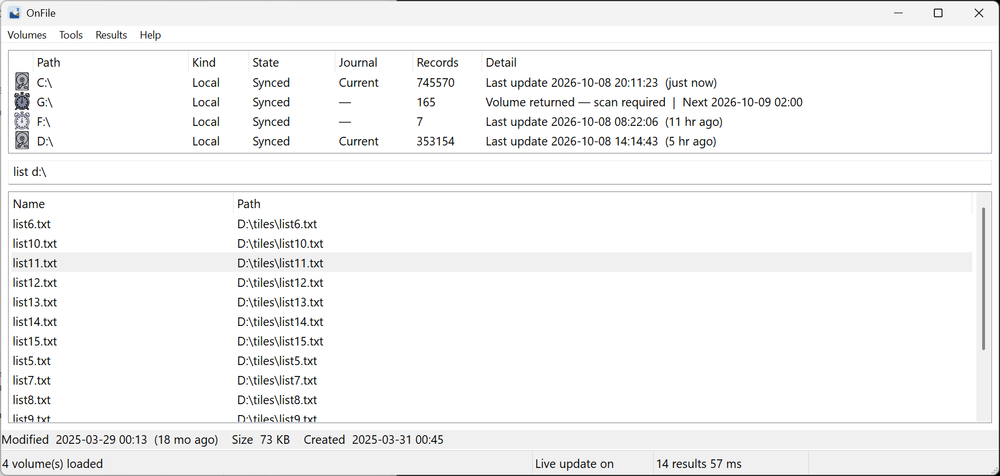

You pick the locations
Add NTFS, FAT32 and exFAT drives, plus network shares. Nothing else is in the index.
Free Windows app · Version 2.1.0
Onfile indexes names and paths on the local drives and network shares you choose. Open the file, open the folder, copy the path or name, or open your terminal in that folder—without waiting on Explorer.

You control the index. Onfile does not pretend every location behaves like C:.
Add NTFS, FAT32 and exFAT drives, plus network shares. Nothing else is in the index.
Local NTFS follows the change journal. Shares and other drives are scanned when you ask, or on a schedule you set per volume.
Find the file, then open it, open the folder, copy the path or name, or open your default terminal in that folder.
Search is the means. These are the jobs after you find the file.
Ctrl+Shift+F brings Onfile up with the cursor in search.
Onfile stays in the tray so live updates and scheduled scans keep running.
Pick the default under Tools → Default terminal. Ctrl+Shift+Enter opens it at the selected result.
Name and path search on locations you add. That is the whole product.
Short answers. The limits are intentional.
Everything is excellent for local NTFS names. Onfile is built around locations you add, including shares you scan on demand or on a schedule, and actions on the result.
After a scan, you search the index instantly. The scan itself depends on the share. You start it, or set a schedule; Onfile must be running for a scheduled scan to start.
No. Names and paths only.
The one you choose under Tools → Default terminal. It opens in the folder that contains the selected file.
Yes. Onfile is free. It needs a license key starting with ONFILE-. Activate it under Help → License. One key works on two PCs, and Onfile keeps working offline for 30 days between checks.
Download Onfile and get your free ONFILE- license key in one step. The key arrives by email.